Reference
Crafting
Every crafting, smelting, smithing and brewing recipe the mod adds.
Every recipe in the mod: 30 crafting, smelting and smithing recipes, plus 3 brewing steps. Hover a slot for its name; the list under each grid names every ingredient. Vanilla items are shown by name.
Doors#
 Reinforced Iron
Reinforced Iron
- Iron Ingot
- Copper Ingot
- Block of Iron
- Reinforced Iron
Makes one. Breaks back into 2 iron ingots, 2 copper ingots and sometimes the block of iron.
Memarium#
 Memarium Ingot (furnace or blast furnace)
Memarium Ingot (furnace or blast furnace)
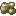
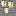
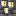
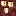
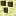
Furnace 10 s, blast furnace 5 s, 1 experience each.
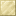
Block of Memarium- Memarium Ingot
- Block of Memarium
Memarium Ingot from a block
- Block of Memarium
- Memarium Ingot
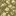
Block of Raw Memarium- Raw Memarium
- Block of Raw Memarium
Raw Memarium from a block
- Block of Raw Memarium
- Raw Memarium
Memarium tools and armor (smithing)#
At a smithing table: Remembered Upgrade + diamond piece + Memarium Ingot. Enchantments and trims carry over, like netherite.
 Smithing table
Smithing table
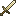
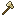
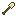
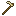
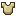
- Remembered Upgrade (Smithing Template)
- Memarium Ingot
Smithing templates#
Remembered Upgrade (duplicate)
- Diamond
- Remembered Upgrade (Smithing Template)
- Memarium Ingot
Makes two: the one you put in and a copy.
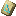
Builder Armor Trim (duplicate)- Diamond
- Builder Armor Trim (Smithing Template)
- Reinforced Iron
Makes two. Apply it at a smithing table like any trim.
Memory items#
 Memento
Memento
- Compass
 Settled Heart
Settled Heart- Ender Pearl
- Memento
A row of three, in any row of the grid.
 Snapshot
Snapshot
- Empty Map
- Settled Heart
- Ender Pearl
- Snapshot
A row of three, in any row of the grid. An empty map.
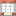
Memory Anchor- Memarium Ingot
- Block of Redstone
- End Crystal
- Memory Anchor
Punch Clock#
The respawn block for The Remembering. What it does is on Items.
Punch Clock
- Iron Ingot
- Clock
- Memarium Ingot
- Punch Clock
Seven iron ingots round a clock, the Memarium Ingot bottom middle.
Brewing#
In a brewing stand, in two steps. Details on Insanity.
| Base | Ingredient | Makes |
|---|---|---|
| Awkward Potion | Raw Memarium | Potion of Memory |
| Potion of Memory | Fermented Spider Eye | Potion of Insanity |
| Potion of Memory | Golden Carrot | Potion of Sanity |
Gunpowder makes the splash versions and dragon's breath the lingering ones, as in vanilla.
Not craftable#
Lamps, settled blocks, sherds, the Day One disc, the Settled Heart, the Still Life Head and Memarium ore only come from the world. Remembered Upgrade and Builder Armor Trim templates are found first, then duplicated.